Cs
Important
个人认为这份笔记写的不怎么样，若有在看的同学，希望仅作为一个速通参考，而非学习指导；真正想要学明白计组，还需自行看书领悟
一、计算机系统概述
1.1 计算机系统基本工作原理
省流版：
| 模块 | 核心内容 | 关键部件 | 要点 |
|---|---|---|---|
| 冯诺依曼结构 | 存储程序思想：程序和数据存放在主存，以二进制表示 | 五大部件：运算器、控制器、存储器、输入设备、输出设备 | 指令 = 操作码 + 地址码 |
| 存储器 | 存储指令和数据，程序执行前必须加载 | MAR（主存地址寄存器）、MDR（主存数据寄存器） | MAR 位数 ↔ 地址线位数；MDR 位数 ↔ 数据线位数 |
| 总线系统 | CPU 与主存/外设之间的数据交换通道 | 地址总线、数据总线、控制总线 | 地址总线：定位；数据总线：传输；控制总线：控制读写 |
| 运算器（ALU） | 执行算术和逻辑运算 | ALU、通用寄存器组（GPRS）、标志寄存器 | GPRS 存操作数和结果；标志寄存器：ZF（零）、SF（符号） |
| 控制器（CU） | 指挥协调程序执行：取指、译码、执行 | CU、IR、PC | IR 存当前指令；PC 存下一条地址（自动 +1 或跳转） |
| 输入/输出设备 | 完成人机交互 | 键盘、鼠标、显示器等 | 简称 I/O |
1.1.2 冯诺依曼结构计算机
冯诺依曼结构计算机 主要包含以下几个方面：
- 采用“存储程序”工作方式
- 计算机由运算器、控制器、存储器、输入设备和输出设备5个基本部件组成
- 存储器不仅能存储数据，也能存储指令
- 计算机内部以二进制形式表示指令和数据；每条指令由操作码和地址码两部分组成，操作码指出操作类型，地址指出操作数的地址；程序由一串指令组成
通常，我们将 控制部件、运算部件和各类寄存器互连组成的电路 称为 中央处理器 ，也就是CPU；将用来存放指令和数据的存储部件称为 主存储器 ，简称为内存或主存
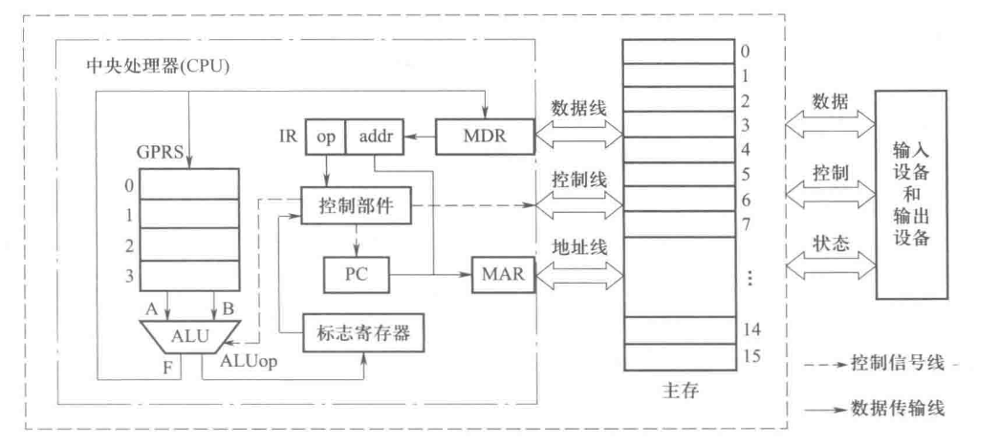
存储器
-
存储程序思想
-
程序执行前：指令和数据必须先存入主存。
-
主存：由多个存储单元组成，每个单元有 唯一地址。
-
总线分类（三大总线）
| 总线名称 | 主要作用 |
|---|---|
| 地址总线 | 传输存储单元地址 |
| 数据总线 | 传输数据信息 |
| 控制总线 | 传输控制信号（读/写等） |
-
CPU 访问主存流程 将主存地址送入 MAR（主存地址寄存器）；地址通过 地址总线 发给主存；CPU 通过 控制总线 发出读/写命令；数据在主存和 MDR（主存数据寄存器）之间交换；数据再通过 数据总线 送入或取出
-
对应关系
-
MAR 位数 ↔ 地址线位数
-
MDR 位数 ↔ 数据线位数
运算器
在计算机中，运算器（ALU） 是执行 算术运算 和 逻辑运算 的核心部件。CPU 提供给 ALU 的操作数可以来自 主存，也可以来自 通用寄存器组（GPRS）。 通用寄存器 既能 暂存数据，又能 保存运算结果，因此每个寄存器都需编号（通常从 0 开始）。CPU 运算过程为：从寄存器取数 → 送入 ALU 运算 → 结果写回寄存器。
此外，ALU 运算还会产生 标志信息（重点），例如：
- ZF（零标志）：结果是否为 0
- SF（符号标志）：结果是否为负
这些标志会存入 标志寄存器，供程序进行 条件判断与分支控制。
控制器
在计算机中，控制器（CU，Control Unit） 负责 自动取指、译码和执行指令，是计算机能连续工作的关键部件。 为了配合 CU，还需要：
- 指令寄存器（IR）：存放从主存取出的指令
- 程序计数器（PC）：存放下一条将要执行指令的主存地址
执行流程：CPU 取指时，将指令存入 IR；同时，PC 自动加 1（或跳转）以得到下一条指令地址，并送回 PC 保存。
输入输出设备
也称为I/O设备，用来和用户交互
键盘，鼠标，显示器等都是I/O设备
1.1.3 程序和指令的执行过程
在冯·诺依曼结构中，程序执行就是 执行指令 的过程。
Note
指令（Instruction） 用 0 和 1 表示，用来指示 CPU 完成某个基本操作。
常见指令示例：
| 指令 | 功能 |
|---|---|
| 取数指令（load） | 从主存单元取出数据存放到通用寄存器中 |
| 存数指令（store） | 将通用寄存器的内容写入主存单元 |
| 加法指令（add） | 将两个通用寄存器内容相加后送入结果所在的通用寄存器 |
| 传送指令（mov） | 将一个通用寄存器的内容送到另一个通用寄存器 |
指令格式 ：通常由 若干字段 组成：
- 操作码字段：指明操作类型（如 取数、存数、加、减、传送、跳转 等）
- 地址码字段：指出操作数的位置（如寄存器编号、主存单元地址等）
Note
举个例子如下：
首先假定我们的程序环境如下：
字长：8 位
通用寄存器：4 个（r0～r3，编号 00~11）
主存单元：16 个（地址 0000~1111，4 位地址线）
寄存器宽度：ALU、GPRS、IR、MDR 全 8 位
地址寄存器：PC、MAR 为 4 位
指令格式
| 格式 | 字段 | 功能说明 |
|---|---|---|
| R 型 | op(4) + rt(2) + rs(2) |
R[rt] ← R[rt] op R[rs] 或 R[rt] ← R[rs] |
| M 型 | op(4) + addr(4) |
R[0] ← M[addr]（取数）或 M[addr] ← R[0]（存数） |
其中，R型 是寄存器间的操作；M型 是主存与寄存器间的操作
这里的M型比较简陋，是主存与寄存器R0间的操作，只会影响到R0
指令操作码
| 操作码 | 对应操作 |
|---|---|
| 0001 | 寄存器传送 mov |
| 0010 | 加法 add |
| 1110 | 取数 load |
| 1111 | 存数 store |
程序示例 ：
主存的初始内容如下：
| 地址 | 内容(机器码) | 指令说明 | 符号表示 |
|---|---|---|---|
| 0 | 1110 0110 | I1: R[0] ← M[6] |
load r0, 6# |
| 1 | 0001 0100 | I2: R[1] ← R[0] |
mov r1, r0 |
| 2 | 1110 0101 | I3: R[0] ← M[5] |
load r0, 5# |
| 3 | 0010 0001 | I4: R[0] ← R[0]+R[1] |
add r0, r1 |
| 4 | 1111 0111 | I5: M[7] ← R[0] |
store 7#, r0 |
| 5 | 0001 0000 | 操作数 x = 13 | |
| 6 | 0010 0001 | 操作数 y = 33 | |
| 7 | 0000 0000 | 结果 z，初值 0 |
执行过程 ，以 I1 为例子：
| 步骤 | 操作 | 结果 | 注释 |
|---|---|---|---|
| 取指 | IR ← M[0] |
IR = 1110 0110 | 从主存地址 0 取出指令，放入指令寄存器 IR |
| PC+1 | PC ← PC+1 |
PC = 0001 | 程序计数器 PC 自动加 1，准备下一条指令地址 |
| 译码 | op=1110, addr=0110 |
op=load, addr=6 | 控制器对指令译码：操作为取数，地址是主存单元 6 |
| 访存 | MAR ← 0110，读 M[6]→MDR |
MDR = 33 | 将地址 6 送入 MAR，通过总线从主存读取 33 存入 MDR |
| 执行 | R[0] ← MDR |
R[0] = 33 | 将 MDR 中的数据传送到寄存器 r0 |
执行顺序
| 指令序号 | 指令机器码 | 指令功能 | 执行结果 | 注释 |
|---|---|---|---|---|
| I1 | 1110 0110 | load r0, 6# | R[0] ← M[6] = 33 | 从主存单元 6 取出操作数 y=33，存入寄存器 r0 |
| I2 | 0001 0100 | mov r1, r0 | R[1] ← R[0] = 33 | 将寄存器 r0 的内容 33 复制到寄存器 r1 |
| I3 | 1110 0101 | load r0, 5# | R[0] ← M[5] = 13 | 从主存单元 5 取出操作数 x=13，覆盖到寄存器 r0 |
| I4 | 0010 0001 | add r0, r1 | R[0] ← R[0]+R[1] = 13+33=46 | 将 r0 与 r1 相加，结果 46 存入 r0 |
| I5 | 1111 0111 | store 7#, r0 | M[7] ← R[0] = 46 | 将寄存器 r0 的结果 46 写回主存单元 7，作为 z |
小总结：
一个程序的实现是由多个指令组成的，而每条指令的实现又是由多个步骤组成的，一般为 取指 → PC+1 → 译码 → 访存 → 执行 五步
1.2 程序的开发和运行
1.2.1 程序设计语言和翻译程序
- 低级编程语言：包括机器语言和汇编语言，机器能直接执行机器指令，而汇编指令需转换成机器指令后才能执行
- 高级编程语言：与具体机器无关、可读性和描述能力更强，用一句语句即可实现复杂功能，大大提高了编程效率。
翻译程序
由于计算只能执行 机器语言 ，所以我们需要将 高级语言程序 转化为 机器语言程序 ；将这类转换的软件称为 语言处理系统 。
解释两个名词：
- 源语言/源程序：待翻译的语言/程序
- 目标语言/目标程序：翻译得到的语言/程序
而翻译程序有以下三类：
| 类型 | 名称 | 功能 | 典型例子 |
|---|---|---|---|
| 汇编程序 | 汇编语言 → 机器语言 | 把汇编指令翻译为机器可执行的二进制代码 | NASM、MASM（常见的汇编器） |
| 解释程序 | 边翻译边执行 | 将源程序逐条翻译成机器指令并立即执行 | Python 解释器（CPython）、JavaScript 引擎（Node.js / V8） |
| 编译程序 | 整体翻译，生成目标代码 | 把高级语言一次性翻译成汇编/机器代码 | GCC（C/C++ 编译器）、javac（Java 编译器） |
1.3 计算机系统的层次结构
传统计算机系统采用分层方式构建，即计算机系统是一个层次结构系统，通过向上层用户提供一个抽象的简洁接口而将较低层次的实现细节隐藏起来
下图为计算机的系统抽象层及其转换，我们目前学习关注的点在于 ISA （指令集体系结构）
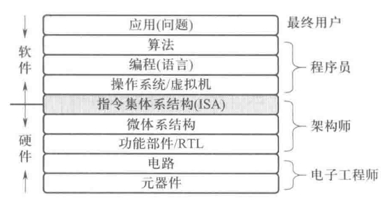
ISA 是处理器硬件和软件之间的接口，定义了处理器支持的指令、数据类型、寄存器、寻址模式和存储模式，使得软件能够与硬件交互
Tip
你可以把 ISA（指令集体系结构） 想象成一份“说明书”或“翻译官”，它告诉软件：硬件会说哪些话（指令）、能认哪些数字（数据类型）、在哪存东西（寄存器和内存）、以及怎么找它们（寻址模式）。
1.4 计算机系统性能评价
1.4.1 计算机性能的定义和测试
吞吐率（throughput）
- 定义：单位时间内系统完成的工作量
- 类似概念：带宽（bandwidth） → 单位时间内传输的信息量
响应时间（response time）
- 定义：从 作业提交 到 作业完成 所用的时间
- 类似概念：执行时间（execution time）、等待时间（latency）
- 用途：衡量单个任务完成的时间
执行时间（execution time）
- 含义：完成同样工作量所用的时间 → 越短越好
- 注意：执行时间不仅包括 CPU 执行指令的时间，还包括：
- I/O 操作（磁盘、网络等）
- 操作系统运行开销（调度、切换）
- 用户感受到的执行时间 = CPU 时间 + 其他时间
CPU 时间（user CPU time）
- 定义：CPU 执行程序指令的时间（真正“算”的时间）
- 区别：与 I/O 等待、操作系统调度等时间不同
- 用户感知执行时间 = CPU 时间 + 等待时间/其他开销
系统性能 与 CPU 性能
- 系统性能：整个系统完成工作的速度，受 CPU + I/O + 操作系统 等影响
- CPU 性能：仅指 CPU 执行指令的速度
- 二者 不等价：系统性能更综合，CPU 性能只是其中一部分
CPU时间计算与性能指标⭐
| 概念 | CPU 含义 | 工厂流水线类比 | 说明 |
|---|---|---|---|
| 时钟周期 | 执行一步操作所需的基本时间 | 传送带走 一格 的时间 | 一格 = CPU 执行一次最小动作 |
| 时钟频率 | 每秒钟包含的时钟周期数（= 1/时钟周期） | 传送带 一秒走多少格 | 频率高 → 传送带快 |
| CPI | 执行一条指令平均需要的时钟周期数 | 做一个零件需要几格传送带 | 指令复杂 → 需要更多格 |
| 指令数 | 程序需要的总指令条数 | 要生产的 零件总数 | 程序越复杂 → 零件越多 |
| CPU 执行时间 | 程序完成所需总时间 | 总生产时间 = 零件数 × 每件所需格数 × 每格时间 | 核心公式 |
定义 \(CPI_i\)代表第 \(i\) 种不同类型的指令；\(C_i\) 代表第 \(i\) 种指令的条数 $$ 程序总时钟周期数 = \sum_{i=1}^n CPI_i \times C_i $$
总共需要的格子数 = 每种零件总数 × 这种零件每个需要几格传送带。
也就可以得到 程序的平均 \(CPI\)，这个不加赘述，上式的逆运算就行 $$ 用户CPU时间 = CPI \times 程序总指令条数 \times 时钟周期 $$
总生产时间 = 零件总数 × 每个零件需要几格传送带 × 每格传送带的时间。
性能度量
-
用户 CPU 时间：程序在 CPU 上执行所需的时间
-
性能 ∝ 1/CPU 时间
$$ \text{性能} \propto \frac{1}{\text{CPU 时间}} $$ -
两台机器 \(M_1\) 与 \(M_2\) 性能比较： $$ \text{加速比} = \frac{T_{M_2}}{T_{M_1}} $$ 若 \(= n\)，说明 \(M_1\) 的速度是 \(M_2\) 的 \(n\) 倍
CPU 时间公式 $$ T = \text{指令数} \times CPI \times 时钟周期 $$
- 指令数：由程序、编译器决定
- CPI：由指令集和实现方式决定
- 时钟周期：由硬件和工艺决定（= 1/主频）
三要素关系
- 三者互相制约：优化一个，可能导致另一个变差
- 减少指令数 → CPI 可能上升
- 降低 CPI → 可能需要增加时钟周期宽度（降低主频）
- 指令数最少 ≠ 执行时间最短
- 必须综合考虑 指令数 + CPI + 时钟周期
小结
-
性能比较用 CPU 时间倒数
-
核心公式： $$ T = \text{指令数} \times CPI \times 时钟周期 $$ 优化性能时，要综合三因素，而不是单看指令数
Note
例 1.1 假设某个频繁使用的程序 P 在机器 M₁ 上运行需要 10 s，M₁ 的时钟频率为 2 GHz。设计人员想开发一台与 M₁ 具有相同 ISA 的新机器 M₂。某种新技术可使 M₂ 的时钟频率增加，但同时也会使 CPI 增加。假定程序 P 在 M₂ 上的时钟周期数是在 M₁ 上的 1.5 倍，则 M₂ 的时钟频率至少应达到多少，才能使程序 P 在 M₂ 上的运行时间缩短为 6 s？
解：
程序 P 在机器 M₁ 上的时钟周期数 = 用户 CPU 时间 × 时钟频率 = 10 s × 2 GHz = 20 G。
因此，程序 P 在机器 M₂ 上的时钟周期数为 1.5 × 20 G = 30 G。
要求程序 P 在 M₂ 上的运行时间缩短到 6 s，则 M₂ 的时钟频率至少应为 程序总时钟周期数 ÷ 用户 CPU 时间 = 30 G / 6 s = 5 GHz。
其它的评估方式
- 指令执行速度进行性能评估
- 用基准程序进行性能评估
章节小结
冯诺依曼核心：存储程序；指令=操作码+地址码；五大部件=运算器、控制器、存储器、输入/输出
存储器与总线：
- MAR 位数 ↔ 地址线位数；MDR 位数 ↔ 数据线位数
- 三总线：地址（定位）、数据（传输）、控制（时序/读写）
CPU 三要素：指令数、CPI、时钟周期（\(T_{clk}=1/f\)）
- \(T_{CPU}=\text{指令数}\times \text{CPI}\times T_{clk}\)
- \(总周期=∑_iCPI_i⋅C_i\)；\(\text{平均CPI}=\frac{\sum_i CPI_i\cdot C_i}{\sum_i C_i}\)
性能比较：
- Speedup = \(\dfrac{T_{\text{old}}}{T_{\text{new}}}\)（越大越好）
- 系统性能 ≠ 仅 CPU 性能（还受 I/O、OS 影响）
执行五步：取指 → PC+1 → 译码 → 访存 → 执行
标志寄存器：ZF 零、SF 符号（常用于条件分支）
二、数据的类型及机器级表示
在上一章中，我们从整体上认识了计算机系统的基本构成与工作原理： 冯·诺依曼结构确立了“存储程序”的核心思想，CPU 通过取指、译码与执行等步骤来运行程序，系统性能则取决于 指令数、CPI 和时钟周期 等因素。这些内容为我们理解计算机如何“运行一个程序”奠定了基础。
然而，程序的本质是 数据的加工与处理 。无论是指令还是操作数，都需要以特定的 数据类型 表示，并在底层转化为二进制编码。不同的数据类型（整数、浮点数、字符、指针等）在机器级都有相应的存储方式和表示规则，它们直接决定了 CPU 如何解释和操作这些比特位。
因此，在进入第二章时，我们将进一步聚焦于 数据的类型及其机器级表示 ，探讨计算机如何在底层“看待”与“存放”信息，从而为后续的指令系统与程序设计打下基础。
2.1 C语言程序中的变量和常量
这一部分在程序设计课程中有所涉及，不做过多赘述，下面写两个小demo，可以自行实验尝试
各字段的长度
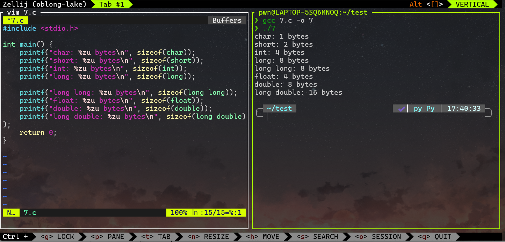
数值的表示
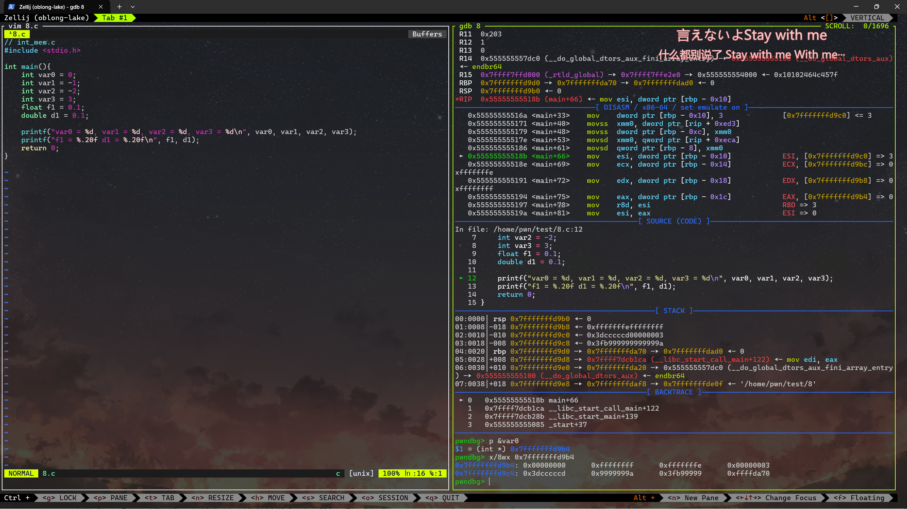
可以看到，int在内存中以补码的形式存储， -1 是 0xffffffff , -2 是 0xfffffffe, 0.1 的浮点数表示为 0x3dcccccd
2.2 数制和编码
定点与浮点表示
小数点位置约定在固定位置的称为定点数，小数点位置约定为可浮动的数称为浮点数
定点表示
对于定点小数，其小数点总是固定在数的左边，一半用来表示浮点数的尾数部分
对于定点整数，其小数点总是固定在数的右边，因此可以用“定点整数”来表示整数或浮点数的阶（指数）
浮点表示
任意一个实数 \(X\) 可以表示为如下形式 $$ X = (-1)^S \times M \times R^E $$ 其中，
- \(S\)取值为 0 或 1，用来决定符号；
- \(M\) 是一个二进制定点小数，称为数 \(X\) 的 尾数
- \(E\) 是一个二进制定点整数，称为数 \(X\) 的 阶 或者 指数
- \(R\) 是基数，可以取值为2、4、16等
在基数一定的情况下，尾数M的阶位反映数 \(X\) 的有效位数，它决定了数的表示精度，有效位越多，表示精度越高；阶 \(E\) 的位数决定数 \(X\) 的表示范围；阶 \(E\) 的值确定了小数点的位置
原码、反码、补码
通常将数值数据在计算机内部编码后表示的数称为机器数，而机器数真正的值称为机器数的真值
\(-10\) 用8位补码表示为 \(1111,0110\) 说明机器数 \(1111,0110B\) 的真值是 \(-10\)
原码
直接用二进制位表示数值和符号，最高位为符号位（0表示正数，1表示负数），其余位表示数值的绝对值
\(+5\) 的原码为 \(0000,0101\) ; \(-5\) 的原码是 \(1000, 0101\)
但原码不方便实现计算电路，因此提出了反码，用来简化计算机对负数的表示和运算
反码
正数的反码和原码相同；负数的反码是将正数的所有位按位取反（符号位除外）
\(+5\) 的反码为 \(0000,0101\) ; \(-5\) 的反码是 \(1111, 1010\)
但是 \(0\) 就同时存在 \(1111,1111\) 和 \(0000,0000\) 两种表示方法，计算依旧复杂，因此提出了 补码 的概念
补码
正数的补码为它本身；负数的补码为 \(反码 + 1\) 或 \(2^n - 负数的绝对值\)
\(+5\) 的8位补码为 \(0000,0101\) ; \(-5\) 的8位补码是 \(1111, 1011\)
2.4 浮点数表示
任意一个浮点数可以用两个定点数来表示，定点小数表示浮点数的尾数，定点整数表示浮点数的阶
同时，通常将阶的编码称为阶码，通常采用移码形式。至于具体的表示方法，可见下文例子
Note
例2.21 ：将十进制数 65798 转换位下述32位浮点数的形式
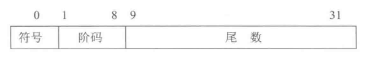
第0位为数符 \(S\)，第\(1 \sim 8\) 位为 8 位移码表示的阶码 \(E\) ( 偏置常数为127)；第 \(9 \sim 31\) 位为尾数中的 23位二进制原码小数部分；基数是2，规范化尾数形式为 \(\pm 1.bb\ldots b\)，其中，小数点前的 “1” 不明显表示，为隐藏位
解：
因为 \((65798)_{10} = (1,0000,0001,0000,0110)_2=(1.000,0000,1000,0011)_2 \times 2^{16}\)，所以数符 \(S=0\) , 阶码 \(E=(127+16)_{10} = (143)_{10} = (1000,1111)_2\)
因此 \(65798\) 用上述浮点数形式表示如下
S | Exponent | Fraction(23)
0 | 1000 1111 | 0000 0001 0000 0110 0000000
整理为16进制即为： \(4780,8300H\)
上述文本中高亮的部分即为 IEEE 754 单 精度浮点数格式 。这里对一些术语进行解释，接着把原本公式端上来 $$ X = (-1)^S \times M \times R^E $$
-
符号位S 占1bit（第0位）
-
阶码 ：占8bit，决定数值的大小范围，这里用 移码表示 法，如下式。 \(e\) 表示实际指数，\(E\)是存储值，有效范围是 $$ e = E - Bias $$
-
单精度偏置常数 Bias = 127
-
双精度偏置常数 Bias = 1023
这样取一个中间值，可以避免存负数指数的时候需要补码，比较大小的时候直接存储值就可以了
-
尾数 ：占23bit，表示的是规范化浮点数的小数部分 \(bb\ldots b\)
真正计算的时候要加上前面的隐藏位“1”
- 规范化尾数： 浮点数的标注表示法如下。要保证小数点前面只有一个有效数字（这里固定为二进制的1）；同时，因为这个“1”总是存在，所以不用存储，称为 隐藏位 $$ \pm 1.bb \ldots b \times 2^e $$
那么这个公式，我们也可以很简单的计算得到 IEEE 754单精度浮点数格式 的范围
- 正数最大值：\(1.11\ldots 1 \times 2^{11\ldots 1} = (2 - 2^{-23}) \times 2^{128}\)
- 正数最小值：\(1.00\ldots 0 \times 2^{00\ldots 0} = 1.0 \times 2^{-127} = 2^{-127}\)
因为原码是对称的，故该浮点数格式的表示范围是关于原点对称的，如下图
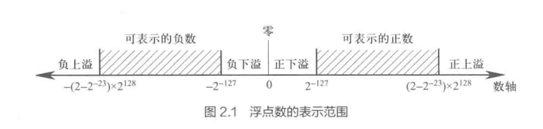
Tip
根据浮点数的表示格式，只要尾数为 0，不管阶码是什么，其值都为 0 ，这样的数称为 机器零 。因此机器零的表示不唯一。通常，用阶码和尾数同时为 0 来唯一表示机器零，即当结果出现尾数为 0 时，不管阶码是什么，都将阶码取为 0。机器零有 +0 和 -0 之分。
那么同样介绍一下 IEEE 754 双 精度浮点数格式
原理和单精度基本一致，不过阶码增加3位，尾数增加29位，如下图
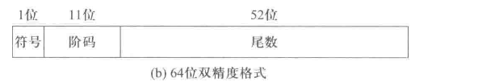
不过这种表示方法因为是离散的表示，所以肯定存在一些特殊值，如下表
| 值的类型 | 单精度（32 位）表示方式 | 单精度值 | 双精度（64 位）表示方式 | 双精度值 |
|---|---|---|---|---|
| 正零 | S=0, E=0, f=0 | +0 | S=0, E=0, f=0 | +0 |
| 负零 | S=1, E=0, f=0 | -0 | S=1, E=0, f=0 | -0 |
| 正无穷大 | S=0, E=255(全1), f=0 | +∞ | S=0, E=2047(全1), f=0 | +∞ |
| 负无穷大 | S=1, E=255(全1), f=0 | -∞ | S=1, E=2047(全1), f=0 | -∞ |
| NaN（非数） | S=0或1, E=255(全1), f≠0 | NaN | S=0或1, E=2047(全1), f≠0 | NaN |
| 规格化非零正数 | S=0, 0<E<255, f≠0 | \(((1.f)_2 \times 2^{E-127})\) | S=0, 0<E<2047, f≠0 | \(((1.f)_2 \times 2^{E-1023})\) |
| 规格化非零负数 | S=1, 0<E<255, f≠0 | \((-(1.f)_2 \times 2^{E-127})\) | S=1, 0<E<2047, f≠0 | \((-(1.f)_2 \times 2^{E-1023})\) |
| 非规格化正数 | S=0, E=0, f≠0 | \(((0.f)_2 \times 2^{-126})\) | S=0, E=0, f≠0 | \(((0.f)_2 \times 2^{-1022})\) |
| 非规格化负数 | S=1, E=0, f≠0 | \((-(0.f)_2 \times 2^{-126})\) | S=1, E=0, f≠0 | \((-(0.f)_2 \times 2^{-1022})\) |
这里对上表解释
- 全0阶码 全0尾数：+0/-0
IEEE 754的0有两种表示方式。零的符号取决于数符 \(S\)。一般情况下，两者等效
- 全 0 阶码非 0 尾数：非规格化数
非规格化数 的特点是 阶码为全 0，尾数高位有一个或几个连续的 0，但尾数不全为 0 。因此，对于非规格化数，尾数的小数点前一位为 0。单精度和双精度浮点数的阶码分别为 -126 或 -1022，故单精度和双精度非规格化浮点数的值分别为 \((-1)^S \times 0.f \times 2^{-126}\) 和 \((-1)^S \times 0.f \times 2^{-1022}\)
- 全 1 阶码全 0 尾数：+∞/-∞
引入无穷大数使得在计算过程中出现异常的情况下，程序能继续执行下去，并且可为程序提供错误检测功能。+∞ 在数值上大于所有有限数，-∞ 则小于所有有限数。无穷大数既可作为操作数，也可作为运算的结果。当操作数为无穷大时，系统可以有以下两种处理方式： ① 产生不发信号的非数 NaN，如 +∞ + (−∞)，+∞ − (+∞)，∞/∞ 等。 ② 产生明确的结果，如 5 + (+∞) = +∞，(+∞) + (+∞) = +∞，5 − (+∞) = −∞，(−∞) − (+∞) = −∞ 等。
- 全 1 阶码非 0 尾数：NaN
NaN表示一个没有意义的数，称为非数。非数分为 不发信号NaN 和 发信号NaN 两种。下表给出了可能产生不发信号NaN 的计算操作。
| 运算类型 | 产生不发信号 NaN 的计算操作 |
|---|---|
| 所有 | 对通知 NaN 的任何计算操作 |
| 加减 | （+∞）+（−∞），（+∞）−（+∞）等 |
| 乘 | 0 × ∞ |
| 除 | 0/0 或 ∞/∞ |
| 求余 | x MOD 0 或 0 MOD y |
| 平方根 | √x 且 x < 0 |
- 阶码非全0且非全1：规范化非0数
阶码范围为 1 ~ 254 或 1 ~ 2046的数是正常的规格化非0数。根据IEEE 754标准的定义，这种数的阶码范围应该是 -126 ~ +127 或 -1022 ~ +1023。其值的计算公式如下 $$ (-1)^S \times 1.f \times 2^{e-127} 或 (-1)^S \times 1.f \times 2^{e-1023} $$
Note
例2.22 将十进制数 -0.75 转换为 IEEE 754标准的单精度浮点数
解： \((-0.75)_{10} = (-0.11)_2 = (-1.1)_2 \times 2^{-1} = (-1)^S \times 1.f \times 2^{e-127}\) 所以，\(s = 1,f = 0.100 \ldots 0 , e = (127-1)_{10} = (126)_{10} = (0111,1110)_2\) 表示为单精度格式的浮点数 \(1,0111,1110,1000 \ldots 0000, 000\) 十六进制表示为 \(BF40,0000H\)
这里 \((-0.11)_2\) 的小数点右移一位，使得左边出现1： $$ (-0.11)_{2} \xrightarrow{\text{小数点右移一位}} (-1.1)_2 $$ 二进制中 \(右移一位≡乘2^{+1}\) .为了保持数值不变，要再乘回一个 \(2^{-1}\) $$ (-0.11)_2 = (-1.1)_2 \times 2^{-1} $$ 如果第一个不是零也没关系，以此类推往后找就是了
Note
例2.23 求 IEEE 754标准单精度浮点数 \(C0A0,0000H\) 的值
解 ：将 \(C0A0,0000\) 展开为一个32位的单精度浮点数 \(1100,0000,1010,0000,\ldots,0000\)。那么很轻松得到 \(s=1,f=(0.01)_2=(0.25)_{10}，阶码e=(10000001)_2 = (129)_{10}\) 因此可以得到其值为 \((-1)^s \times 1,f \times 2^{e-127} = (-1)^1 \times 1.25 \times 2^{129-127} = -1.25 \times 2^2 = -5.0\)
下表为 IEEE 754 标准的单精度和双精度格式的特征参数
| 参数 | 单精度浮点数 | 双精度浮点数 |
|---|---|---|
| 字宽（位数） | 32 | 64 |
| 阶码宽度（位数） | 8 | 11 |
| 阶码偏置常数 | 127 | 1023 |
| 最大阶 | 127 | 1023 |
| 最小阶 | -126 | -1022 |
| 尾数宽度 | 23 | 52 |
| 阶码个数 | 254 | 2046 |
| 尾数个数 | \((2^{23})\) | \((2^{52})\) |
| 值的个数 | \((1.98 \times 2^{31})\) | \((1.99 \times 2^{63})\) |
| 数的量级范围 | \((10^{-38} \sim 10^{38})\) | \((10^{-308} \sim 10^{308})\) |
C语言的数据转换
多种类型在表达式中混用时，短的类型会被提升为长的类型，有符号被提升为无符号，整数被提升为浮点数
整数类型的提升
若类型的所有值都能用 int 表示，则仍然为 int
否则提升为unsigned int ; char也会提升为 unsigned int
/* 下面的计算中，int会被转换为unsigned */
int a = 1;
unsigned b = 2;
if (a > b) {};
if (a + b > 5) {};
/*========*/
int a = -1; //二进制为0xffff,ffff
unsigned b = 1;
if (a ?b) {}; //这里 a被转化为unsigned，变成一个很大的正整数0xffff,ffff
/*=======*/
int i = 0;
unsigned len = 5;
while(i - 1 > len) { //原理同上
...;
--i;
}//会无限循环
浮点数类型提升
int 和 float/double 计算时，int 会提升为 float/double
float 和 double 计算时，float 会提升为 double
int i;
if (i==(int)(float)i){}; //不一定成立
/*
* 例如i=16,777,217(2^24+1)
* (float)i == 16,777,216.0f(被舍入)
* (int)(float)i == 16,777,216 */
Note
假定变量 i、f、d的类型分别是int、float和double,他们可以取除 +∞、-∞和NaN以外的任意值，判断下面的是否永真
| 表达式 | 判断结果 | 理由 |
|---|---|---|
i == (int)(float)i |
否 | int 的有效位数比 float 多，int → float 可能会丢失精度，再转回 int 后不一定相等。 |
f == (float)(int)f |
否 | float 转 int 时小数部分会被截断，可能导致丢失精度。 |
i == (int)(double)i |
是 | double 的精度和范围都大于 int，所以 int → double → int 时数值不变。 |
f == (float)(double)f |
是 | double 比 float 精度和范围更大，float → double → float 不会丢失数值。 |
d == (double)(float)d |
否 | float 的精度和范围小于 double，当 double → float 时可能溢出或精度损失。 |
f == -(-f) |
是 | 浮点数取负号操作等价于符号位取反，不影响数值本身。 |
(d+f)-d == f |
否 | 例如 d=1.79×10^308，f=1.0f，由于 d+f 向 d 对齐，f 的有效数字被舍入为 0，结果左边为 0，右边为 f。 |
2.6 数据的宽度和排列存放
首先理解一些数据相关的概念
| 概念 | 定义 | 常见表示 | 关系/说明 |
|---|---|---|---|
| 比特 (bit) | 二进制数据的最小单位（0 或 1） | b | 1 bit = 一个二进制位 |
| 字节 (Byte) | 存储的基本单位，1 个字节 = 8 个比特 | B | 1 B = 8 b |
| 字 (Word) | 计算机处理信息的基本单位 | 取决于机器 | 在 Intel x86 中，1 字 = 16 位（2 字节） |
| 字长 (Word length) | CPU 内部整数运算器、寄存器和数据通路的宽度 | 如 16 位、32 位、64 位 | 决定机器一次能处理多少位数据，影响计算机性能 |
| 双字 (Double word) | 字的两倍宽度 | 例：32 位机中双字 = 32 位 | 常用于大于一个字的运算或存储 |
| 容量单位 | 数据存储/传输的大小度量 | KB, MB, GB, TB | 有两种计量方式：① 按 10 的幂次：1 KB = 1000 B② 按 2 的幂次：1 KB = 1024 B |
存储容量通常用 2 的幂次（1 KB = 1024 B），主频和带宽通常用 10 的幂次（1 kb/s = 1000 b/s）。硬盘和文件大小的表示方法因操作系统不同而异：Windows 习惯用二进制前缀，苹果在 Mac OS X 10.6 之后改用十进制前缀。
| 类型 | 进制 | 示例 |
|---|---|---|
| 存储容量 | 2ⁿ (二进制) | 1 MB = 2²⁰ B = 1,048,576 B |
| 带宽/主频 | 10ⁿ (十进制) | 1 Mb/s = 10⁶ b/s = 1,000 kb/s |
| 硬盘/文件 | 视系统而定 | Windows：1 MB = 1024 KB；Mac (10.6+)：1 MB = 1000 KB |
为了避免歧义，二进制前缀增加了一个字母i，如：KB=10^3 而 KiB = 2^10
数据的存储和排列顺序 （大端序和小端序）
在一个按字节编址的计算机中，假定 int 型变量 i 的地址为 0800H，则 i 所占的4个单元i地址为 0800H ~ 0803H。若 i 的机器数为 0123,4567H。这4个字节01H、23H、45H、67H应该各有一个地址。大小端序的排法如下：
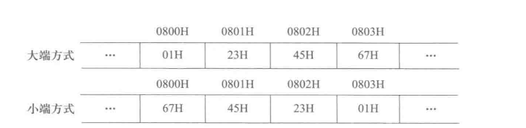
简单来说，大端是指数字的高位在前面（和人的写法一样）；小端是数字的低位在前面
x86、RISC-V是小端；ARM可以配置为大端或小端
章节小结
定点 vs 浮点
- 定点：小数点位置固定（整数/小数）。
- 浮点：\(X = (-1)^S \times M \times 2^E\)（符号位+尾数+阶码）。
原/反/补码
- 原码：最高位符号。
- 反码：正数同原码，负数=原码取反（除符号位）。
- 补码：正数同原码，负数=反码+1。
IEEE 754 浮点数
- 单精度：1+8+23，Bias=127。
- 双精度：1+11+52，Bias=1023。
- 隐藏位：默认有个“1.”不存储。
- 特殊值：±0、非规格化数、±∞、NaN。
C语言类型提升
- 整数：能放下就 int，否则 unsigned。
- 浮点：int→float/double，float→double。
数据存储
- 1B=8bit，1Word=机器字长。
- 存储容量按 2ⁿ，带宽/主频按 10ⁿ。
- 大端：高位在低地址；小端：低位在低地址（x86常用）。
三、数据的运算及运算部件
指令中包含的各种算数逻辑运算能直接在硬件上执行，执行这些运算的硬件称为 运算硬件
本章分为两个部分：首先分析高级语言和机器指令中涉及的各类运算；然后介绍这些运算用到的核心部件——算术逻辑单元（ ALU）的组成和工作原理
3.1 高级语言和机器指令中的运算
高级语言中的运算
除去加减乘除等算术运算，C语言中还包含有一下几类基本运算：
| 类别 | 运算符 | 含义/规则 | 备注 |
|---|---|---|---|
| 按位运算 | | |
按位或（OR） | |
& |
按位与（AND） | ||
~ |
按位取反（NOT） | 一元 | |
^ |
按位异或（XOR） | ||
| 逻辑运算 | || |
逻辑或（OR），布尔值运算 | 非位运算 |
&& |
逻辑与（AND），布尔值运算 | ||
! |
逻辑非（NOT） | 一元 | |
| 移位运算 | << |
左移：低位补 0，高位丢弃；相当于乘以 \(2^k\)；此外，如果移出的位不同于移位后的符号位，则认为发生了溢出 | 溢出可能 |
>> |
右移： 无符号 → 逻辑右移（高位补 0） 有符号 → 算术右移（高位补符号位） |
C标准未明示，编译器通常如此 | |
| 位扩展 | 无符号数扩展 | 高位补 0 | |
| 有符号数扩展 | 高位补符号位 | ||
| 位截断 | - | 高位超出部分丢弃 |
Note
关于 位扩展 有如下c语言代码
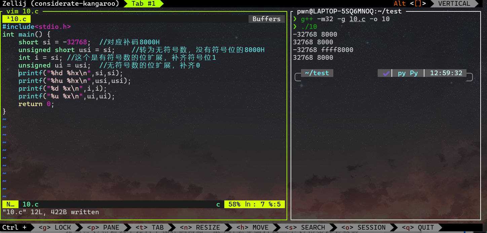
关于 位截断 有如下c语言代码
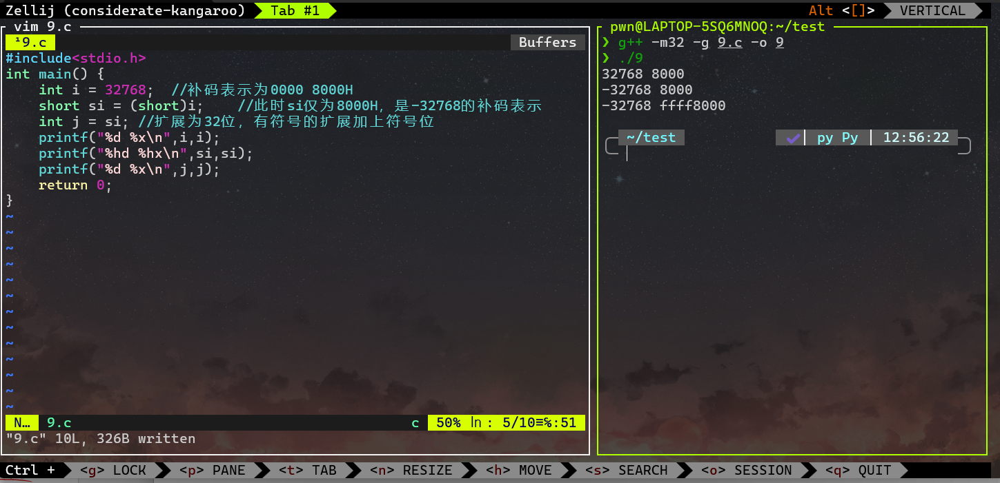
3.2 基本运算部件
计算机中通常用 算术逻辑部件 来完成基本逻辑运算、无符号整数加减运算以及带符号整数加减运算。
各类定点乘除法运算和浮点数运算则可利用加法器或ALU及移位器来实现，因此计算机中的 基本运算部件 是 加法器 、ALU 和 移位器 。而ALU的核心部件则是加法器
全加器和加法器
这个部件在数字逻辑一课中详细学过，不做详细介绍了。而将 \(n\) 个全加器连在一起就可以实现一个 \(n\) 位加法器 $$ F = A \oplus B \oplus C_{in} \ C_{out} = A \cdot B + A \cdot C_{in} + B \cdot C_{in} $$
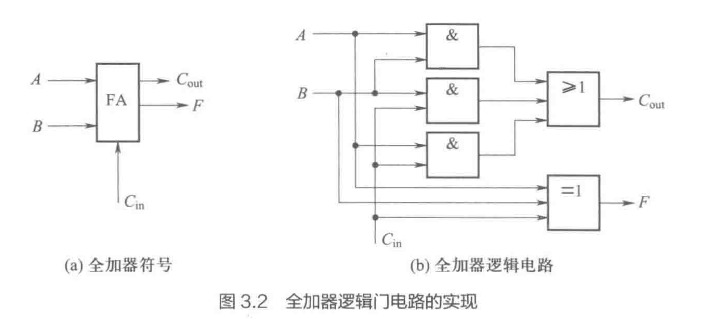
带标志加法器
n 位加法器只能用于两个 n 位无符号二进制数的相加，不能进行无符号整数的减运算，也不能进行带符号整数的加减运算。为了实现这些功能，我们还需要在n位加法器的基础上增加相应的逻辑门电路
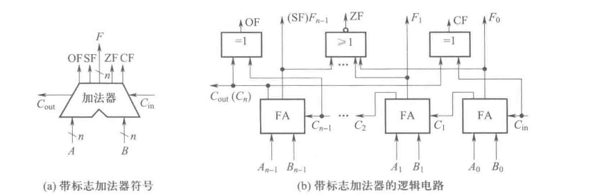
如上图所示，
- 溢出标志 OF 的逻辑表达式为 \(OF=C_n \oplus C_{n-1}\)；当有符号数运算结果超出其表示范围时，OF被置1，用于检测有符号数的溢出情况
- 符号标志位SF 就是和的符号，即 \(SF=F_{n-1}\)；运算结果为负数时，SF被置1，用于判断结果的符号，特别时在有符号数的比较中
- 零标志ZF : \(ZF=1\) 当且仅当 \(F=0\) ；当运算结果为0的时候，ZF被置为1，用于条件跳转指令中，判断结果是否为0
- 进位/借位标志CF : \(CF=C_{out} \oplus C_{in}\) ,即当 \(C_{in} = 0\) 时，CF 进位 \(C_{out}\); 当 \(C_{in} = 1\) 时,CF 为进位 \(C_{out}\) 取反；常用于检测无符号数的溢出
算数逻辑部件
算数逻辑部件的核心部件是带标志加法器，多采用线性进位方式实现。如下图所示
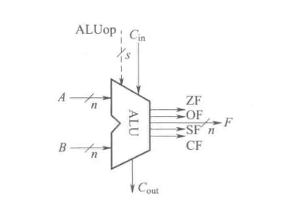
其中，A和B是两个 n 位操作数输入端，\(C_{in}\) 是进位输入端， \(ALUop\) 是操作控制端，用来决定ALU所执行的操作
例如：当ALUop 为 add 操作码时，ALU 就执行加法运算，输出结果就是A加B之和
3.3 定点运算及运算部件
定点运算主要包括无符号整数的按位运算、逻辑移位运算、位扩展和截断运算以及加、减、乘、除运算；带符号整数的算术移位运算、扩展和截断运算以及加、减、乘、除运算等
在计算机内部，带符号整数多采用补码表示，因此本节主要介绍无符号数运算和补码运算
补码加减运算
若两个补码表示的n位定点整数 \([x]_补 = X_{n-1}X_{n-2}\ldots X_0,[y]_补 = Y_{n-1}Y_{n-2}\ldots Y_0\) 则 \([x+y]_补\) 和 \([x-y]_补\) 的运算表达式如下：
总而言之
补码的加法 ：两个补码数相加时，直接进行二进制加法，忽略最高位的进位
补码的减法 ：通过加上被减数的补码来实现即A-B=A+(-B)
Note
例 对于以下C语言片段
unsigned char x = 134;
unsigned char y = 246;
signed char m = x;
signed char n = y;
unsigned char z1 = x - y;
unsigned char z2 = x + y;
signed char k1 = m - n;
signed char k2 = m + n;
说明程序执行过程中，变量 m、n、z1、z2、k1、k2 在计算机中的机器数和真值各是什么。 计算 z1、z2、k1、k2 时得到的标志 CF、SF、ZF 和 OF 各是什么。
解：
因为 x 和 y 是 8 位无符号数，所以
- \(x = 134 = 1000\;0110_B\)
- \(y = 246 = 1111\;0110_B\)
x 和 m 的机器数相同，都是 1000 0110，故 m 的真值为\(-111\;1010_B = -(127-5) = -122\)
y 和 n 的机器数相同，都是 1111 0110，故 n 的真值为\(-000\;1010_B = -10\)
因为无符号整数和带符号整数都是在同一个整数加减运算器中执行的，所以 z1 和 k1 的机器数相同，生成的标志位也相同；同理，z2 和 k2 的机器数相同，生成的标志位也相同。
(1) 对 z1 和 k1 的计算
由 x - y = x + (y 按位取反 + 1) 可得：\(1000\;0110 + 0000\;1001 + 1 = (0)\;1001\;0000\)
- CF = Sub ⊕ Cout = 1⊕0=1
- SF = 1，ZF = 0，OF = 0
所以：
z1的真值为 \(1001\;0000_B = 144\)。由于 CF=1，说明减法有借位，本应为负数，但无符号解释时溢出 → 结果错误。k1的真值为 \(-111\;0000_B = -112\)，且 OF=0，说明结果没有溢出 → 正确。
验证： 134 - 246 = -112，说明 z1 错误，k1 正确。
(2) 对 z2 和 k2 的计算
由 x + y 的机器数相加：\(1000\;0110 + 1111\;0110 = (1)\;0111\;1000\)
- CF = Sub ⊕ Cout = 0⊕1=1
- SF = 0，ZF = 0，OF = 1
所以：
z2的真值为 \(0111\;1000_B = 120\)，但因 CF=1，说明有进位，结果溢出错误。k2的真值为 \(+111\;1000_B = 124\)，且 OF=1，说明发生溢出。
验证： 134 + 246 = 380，大于 8 位无符号最大数 255，也大于 8 位有符号最大数 127，因此 z2、k2 的结果确实溢出。
原码乘法运算
原码作为浮点数尾数的表示形式，需要计算机能实现原码小数的乘法运算。根据每次部分积是一位相乘得到还是两位相乘得到，有原码一位乘法和原码两位乘法。根据原码两位乘法的原理推广，可以有原码多位乘法
原码一位乘法
原理类似于“手算竖式乘法”：每次取乘数的一位，决定是否加上被乘数的部分积，再左移一位
假设我们要算 \(X \times Y\),其中 \(X\) 为被乘数，\(Y\) 是乘数。两者均为原码定点小数（或整数）。步骤如下：
- 符号单独处理：结果的符号位 = \(X\) 符号位 \(\oplus\) \(Y\) 符号位。运算时只对数值部分进行处理（也就是绝对值相乘
- 数值部分逐位相乘：从乘数 \(Y\) 的最低位开始，每次取一位。若该位为1，则将当前被乘数加到部分积中；若该位为0，则部分积不变。每处理完一位，被乘数左移一位
- 得到最终积 ：部分积累加完毕后，按符号确定结果正负
Note
举个例子如下：
\([x]_原 = 0.1101\) \([y]_原 = 0.1011\)，用原码一位乘法计算 \([x \times y]_原\)
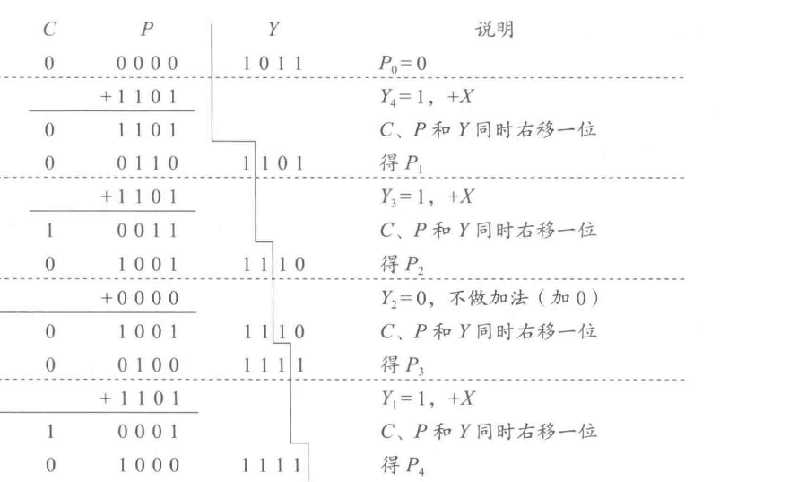
看 \(Y_i\) →（加 \(X\) 或加 0）→ 把 \(C,P,Y\) 同时右移一位，重复 4 次，最后把 \(P\)与 \(Y\) 拼成结果。
原码两位乘法
对于 \(n\) 位原码一位乘法来说，需要经过 \(n\) 次 “判断-加法-右移” 循环，运算速度较慢。于是提出了 对乘数的每两位取值情况进行判断，使每步求出对应于该两位的部分积 的原码两位乘法
- 检查乘数寄存器 \(Y\) 的低两位：
| 乘数低两位 (Y₁Y₀) | 运算操作 | 说明 |
|---|---|---|
00 |
部分积保持不变 | 等价于加 0 |
01 |
部分积 ← 部分积 + X | 加被乘数 |
10 |
部分积 ← 部分积 + 2X | 加被乘数左移一位 |
11 |
部分积 ← 部分积 + (X + 2X) = 3X | 相当于同时加 X 和 2X |
-
将 \((C,P,Y)\) 整体右移两位
-
重复直至 \(Y\) 结束
补码乘法运算
补码一位乘法
基本思想如下：
- 乘数用补码表示。
- 每次看乘数的当前位 \(Y_i\) 和前一位 \(Y_{i-1}\)（通常初始 \(Y_{-1}=0\)）。
- 根据 \((Y_i,Y_{i-1})\)的组合，决定是加上被乘数 \(+X\)、减去被乘数 \(-X\)，还是不变。
- 每次完成后再整体右移一位（算术右移，保留符号位）。
而 \((Y_i,Y_{i-1})\)的规则表如下:
| 当前位 (\(Y_i\)) | 前一位 (\(Y_{i-1}\)) | 操作 |
|---|---|---|
| 0 | 0 | 不变 |
| 1 | 1 | 不变 |
| 0 | 1 | 部分积 = 部分积 + X |
| 1 | 0 | 部分积 = 部分积 - X |
那么计算步骤如下：
-
初始： $$ (C,P,Y,Y_{-1}) $$ 其中 \(C\) 是进位，\(P\) 是部分积，\(Y\) 是乘数，\(Y_{-1}=0\)
-
每轮根据 \(Y_0,Y_{-1}\) 决定是否加/减被乘数。
-
整体算术右移一位（保持符号）。
-
重复 \(n\) 次（\(n\) = 乘数位数）。
Note
计算 \([x]_补=1\;101\) \([y]_补=0\;110\)，用布斯乘法计算 \([x \times y]_补\)
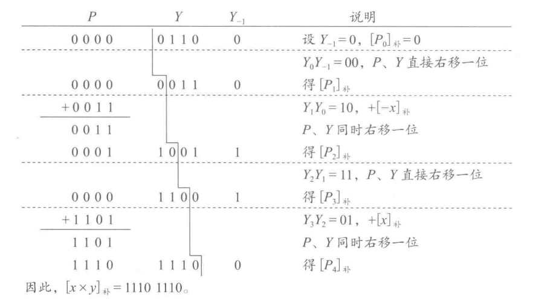
总而言之，就是根据规则表的定义，结合 \((Y_0,Y_{-1})\)的组合决定是 【加被乘数】、【减被乘数】、【不操作】
补码两位乘法
同理于原码两位乘法，将乘数分为两位一组，根据两位代码的组合决定加或减被乘数的倍数，形成的部分积每次右移两位
每次取两个乘数位+前一位来决定操作
| (\(Y_{i+1}Y_iY_{i-1}\)) | 操作 | 说明 |
|---|---|---|
000 或 111 |
0 | 部分积不变 |
001 或 010 |
+X | 加被乘数 |
011 |
+2X | 加被乘数左移一位 |
100 |
−2X | 减被乘数左移一位 |
101 或 110 |
−X | 减被乘数 |
原码除法运算
基本思想
带符号数的除法运算通常分为 符号处理 和 数值计算 两部分
- 符号位：商的符号 = 被除数的符号 \(\oplus\) 除数符号；余数的符号 = 被除数符号
- 数值部分：被除数、除数都按正数来做运算
- 计算方法类似“试商”，用 加-减-移 来实现
算法规则
现设：\(X\) 为被除数、\(Y\) 为除数（均为n位）；商 \(Q\) ;余数\(R\)
-
符号处理：将被除数和除数都转为正数，符号单独记下 \(sign = X_s \oplus Y_s\)
-
初始化：被除数放入余数寄存器 \(R\) ;商寄存器 \(Q\) 置0
-
循环 \(n\) 次：
左移：余数 \(R\) 左移一位，把被除数的下一位移入；
减：计算 \(R-Y\);
若结果≥0，则当前商位 = 1，余数 = 减法结果
若结果＜0，则当前商位=0，余数恢复
- 结束：\(Q\) 即为商（原码），余数在 \(R\) ;按照第一步记录的符号，给商 \(Q\) 加上符号位
同时，根据在减完如果小于零，是否需要恢复余数，分为了 恢复余数除法 和 不恢复余数除法
恢复余数除法
算法步骤
1)初始化：余数 \(R=0\) , 被除数放入商寄存器 \(Q\) ,除数为 \(Y\)
2)循环 \(n\) 次
-
\((R,Q)\) 左移一位
-
试减 \(R=R-Y\)
-
如果 \(R ≥ 0\),则商当前位 \(Q_i = 1\)
如果 \(R < 0\),则恢复余数 \(R = R+Y\),并置 \(Q_i = 0\)
Note
已知 \([x]_原 = 0.1011\) \([y]_原 = 1.1101\) 用恢复余数法计算 \([x/y]_原\)
\(X = [|x|]_补 = 0.1011\)，\(Y = [|y|]_补=0.1101\)，\(-Y = [-|y|]_补 = 1.0011\)
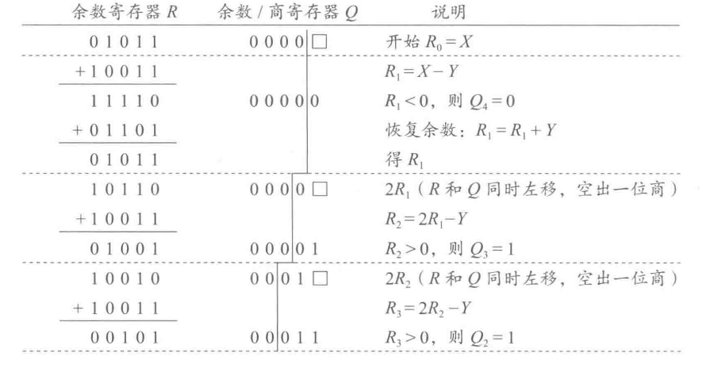
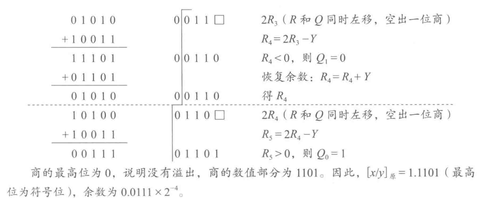
每轮移位 → 试减 → 判断正负 → 确定位 → 必要时恢复
不恢复余数除法
算法步骤
1)初始化：余数 \(R=0\)，被除数放入商寄存器 \(Q\) ,除数为 \(Y\)
2)循环n次：
-
\((R,Q)\)左移一位
-
根据上一步余数符号：
如果 \(R≥0\),则试减 \(R = R-Y\),商位 \(Q_i=1\)
如果 \(R < 0\),则试加 \(R = R+Y\),商位 \(Q_i=0\)
3)最后如果余数 \(R <0\),再执行一次 \(R = R+Y\) 做修正
Note
已知 \([x]_原 = 0.1011\) \([y]_原 = 1.1101\) 用不恢复余数法计算 \([x/y]_原\)
\(X = [|x|]_补 = 0.1011\)，\(Y = [|y|]_补=0.1101\)，\(-Y = [-|y|]_补 = 1.0011\)
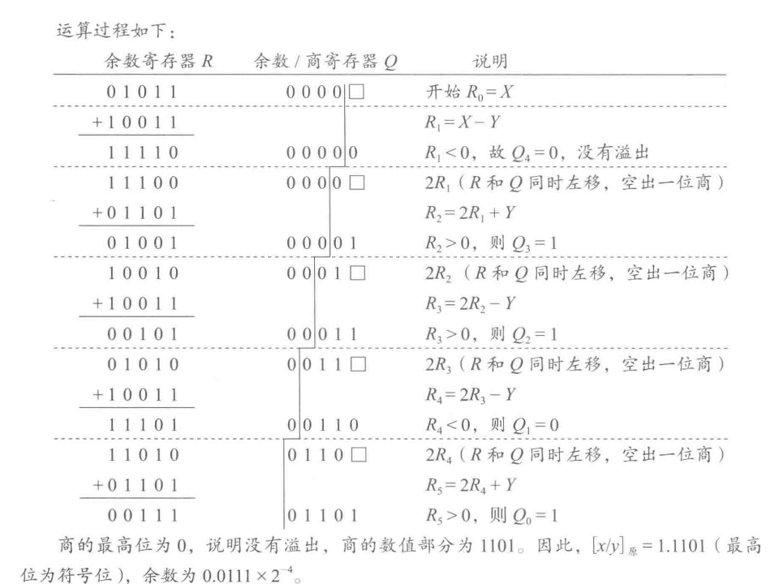
余数 ≥ 0 → 下一轮继续减法 → 商 = 1;余数 < 0 → 下一轮用加法 → 商 = 0
总而言之，两者的对比总结如下
| 方法 | 每轮操作 | 余数负时的处理 | 运算速度 |
|---|---|---|---|
| 恢复余数法 | 左移 → 减除数 → 若负恢复 | 恢复余数，商位=0 | 慢（多一次恢复） |
| 不恢复余数法 | 左移 → 余数≥0减，余数<0加 | 不恢复，下次反向操作 | 快（无需恢复） |
3.4 整数乘除运算
高级语言中两个 \(n\) 位整数相乘得到的结果通常也是一个 \(n\) 位整数，也即结果只取 \(2n\) 位乘积中的低 \(n\) 位。因此，乘除溢出的问题就十分重要了
而对于 无符号数 来说，只要高于 \(n\) 位有非0比特就算溢出
对于 有符号数 来说，要求高于 \(n\) 位必须是正确的符号扩展（全0或全1），否则就是溢出
例如：
-8 × 2=-16,得到的机器数高4位是1111，低4位是0000，虽然符号位正确，但高位并非符号扩展，判定为溢出-3 × 2=6,得到的机器数高4位是0000，低4位是0110，高位与低4位的符号扩展一致，无溢出
Note
解释下述代码的漏洞
int copy_array(int *array, int count) {
int i;
int *myarray = (int*)malloc(count * sizeof(int));
if (myarray == NULL) {
return -1;
}
for (i = 0; i < count; i++) {
myarray[i] = array[i];
}
return count;
}
当count = \(2^{30}+1\) 时，第三行 count * sizeof(int) 将发生这样的情况变化 \((2^{30}+1) \times 4 = 2^{32}+4\) 而无符号整数型最多存储位数为32位，也就是 \(2^{32}\) 位，那么很容易得到 \(2^{32}+4 = 4\)，从而仅分配4字节空间，实现越界写
对于 整数除法，只有当 \(-2\;147\;483\;648/-1\) 时会发生溢出。其它情况下，因为商的绝对值不可能比被除数的绝对值更大，所以肯定不会发生溢出
常量的乘除运算
由于乘除的计算过于缓慢，所以编译器常用移位和加减法代替乘除运算
例如：
x*20可以转为(x<<4)+(x>>2)，通过两次移位和一次加法来实现
对于 无符号整数除法 ：移位右移时，高位补0，低位舍弃。结果与直接除法一致。
对于 有符号整数除法：算术右移，高位补符号位，低位舍弃。当低位移出的全为0时，结果与直接除法一致；否则结果比真实值更小，需**校正**。
例如：
7/3=2但-7/3=-2
校正方法也很简单：对于负数，若不能整除，则需先将被除数加上偏移量 2^k - 1，再移位，保证结果正确。
例如：
-3>>2前，先加1得到-2再右移得到-1
3.5 浮点数运算部件
基本特点
浮点数运算主要包括加、减、乘、除，但比定点数复杂，需要进行如下步骤：
- 对阶（对齐指数）
- 尾数运算（尾数加减）
- 结果规格化
- 舍入处理
- 溢出/下溢判断
与科学计数法的计算类似，但需要保证机器能够处理，并且符合 IEEE 754标准
浮点数加减步骤
- 对阶
使两个浮点数的阶码相等。小阶向大阶对齐，将尾数右移相应位数
位数右移需要考虑舍弃部分 -> 保留附加位参与后续计算
阶差公式： $$ |E_x-E_y|=[E_x]_补-[E_y]_补 （mod\;256) $$
- 尾数加减
在对阶完成后，进行尾数的二进制加减
IEEE 754采用原码小数，因此尾数运算等价于有符号小数的加减
尾数右移过程中要保留附加位
- 尾数规格化
IEEE 754规定尾数为 \(\pm 1.bb\ldots b\)格式
若结果大于等于2，则尾数右移，阶码+1
若结果小于1，则尾数左移，阶码-1
- 尾数舍入与截断
对位数超出的低位进行处理，保证计算精度
浮点数运算结果的精度和舍入
浮点运算中精度与舍入的两个核心问题
在计算机系统中，浮点数的加减法是最常用的运算之一，但由于浮点数采用 有限位数二进制表示，在运算过程中很容易产生 精度丢失和舍入误差。 为了保证结果的 量纲正确性与数值精度，在浮点运算中必须考虑两个关键问题：
- 保留多少附加位才能保证运算精度？
- 最终如何对附加位进行舍入处理？
这两者共同决定了浮点计算的“精度”和“可靠性”。
一、保留附加位：保证中间运算精度
在浮点数加减过程中，尾数往往需要 对阶、移位、相加减 等操作。如果直接将计算结果截断到机器字长范围，会造成较大精度损失。 因此，在 IEEE 754 标准中要求： 浮点数运算的中间结果必须至少保留 2 位附加位（保护位和舍入位），在某些高精度计算中甚至会保留 3 位或更多。
而附加位的定义与作用如下：
| 名称 | 位置 | 功能 |
|---|---|---|
| 保护位（guard bit） | 尾数右移后立即下一位 | 防止有效位被右移丢失，保留尾数的下一位信息 |
| 舍入位（round bit） | 保护位之后的下一位 | 判断是否需要对尾数进行进位（舍入） |
| 粘位（sticky bit） | 舍入位之后的所有位的“或” | 若舍入位后还有 1，则置 1，用于更高精度的舍入判断 |
Note
例如，假设计算中间结果尾数需要右移，原尾数为 \(1.10110101\ldots\)
若机器只能保存 4位尾数，则：
| 有效尾数 | 保护位 | 舍入位 | 粘位 |
|---|---|---|---|
| 1.1011 | 0 | 1 | 后面如果有1就为1，否则为0 |
二、舍入处理：确定最终计算结果
在获得带有附加位的中间结果后，下一步就是**根据舍入规则把它转化为符合浮点数表示范围的结果**。
IEEE 754 标准规定了四种常用的舍入策略，适用于不同的计算场景和需求：
1.就近舍入
- 将结果舍入到**距离最近**的可表示浮点数。
- 如果刚好在两个数中间（即“平分”情况），则**舍入到最低有效位为偶数**的那个数。
Note
例如 \(1.2450 × 10^4 \rightarrow 1.245 × 10^4\) 舍入到最低有效位为偶数的那个数
\(1.2455\times 10^4\rightarrow 1.246\times10^4\)
2.朝 +∞ 方向舍入
- 不论正负数，总是向数轴正方向舍入（即“向上取整”）。
Note
\(1.2450\times 10^4\rightarrow1.25\times10^4\)
\(-1.2450\times10^4\rightarrow-1.245\times10^4\) （比 \(-1.25\times10^4\) 大）
3.朝 -∞ 方向舍入
- 总是向数轴负方向舍入（即“向下取整”）
4.朝 0 方向舍入
- 直接舍去附加位，即 向 0 方向截断 （忽略所有小数部分）
举个例子作为理解：
若 \(x\) 和 \(y\) 为 float型变量，\(x=10.5\),\(y=-120.625\),给出 \(x+y\) 的计算过程
1）对阶
\([E_x]_移=1000\;0010,[E_y]_移=1000\;0101\) 因此，\([E_x-E_y]_补=[E_x]_移+[-[E_y]_移]_补=1000\;0010+0111\;1011=1111\;1101\) ,即 \(E_x-E_y = -11B=-3\) ,对应x的尾数右移3位。
此时x的阶码为 \(1000\;0101\),尾数为 \(0.001\;0\;1010\;0000\;0000\;0000\;0000\;00\)，其中，第一个1为隐藏位，最低3个0为附加位
2）尾数相加
\(0.0010\;1010\;0000\;0000\;0000\;0000\;00+(-1.1110\;0010\;1000\;0000\;0000\;000)=-1.1011\;1000\;1000\;0000\;0000\;0000\;00\)
3）尾数规格化
4）舍入
根据确定的舍入方式，对小数点右边第23位后的数字进行深入，最终得到尾数部分
\(x+y\) 的机器数为 \(1\;1000\;0101\;1011\;1000\;1000\;0000\;0000\;000\)
\(x+y\) 的真值为 \(-1.1011\;1000\;1B \times 2^6=-11011\;10.001B=-110.125\)
章节小结
运算类型
- 高级语言中除加减乘除外，还有按位、逻辑、移位、扩展与截断运算。
- 无符号数 → 逻辑移位，高位补0；有符号数 → 算术移位，高位补符号位。
基本运算部件
- 加法器：全加器级联，带标志位（CF/OF/SF/ZF）。
- ALU：以加法器为核心，可执行算数与逻辑运算。
- 移位器：支持逻辑移位与算术移位。
定点运算
- 补码加减：直接二进制加法，减法用加补码实现。
- 乘法：原码/补码乘法（Booth算法提高效率）。
- 除法：恢复余数法（慢，需恢复）与不恢复余数法（快）。
- 溢出：无符号看高位，有符号需正确符号扩展。
整数运算优化
- 编译器常用移位 + 加减代替乘除。
- 有符号右移可能偏小 → 需校正。
浮点运算（符合 IEEE 754）
- 步骤：对阶 → 尾数加减 → 规格化 → 舍入 → 溢出/下溢判断。
- 特点：实现复杂，可能出现“大数吃小数”。
第四章 指令系统及程序的机器级表示
在前面三章中，我们依次了解了计算机系统的整体结构、数据的机器级表示，以及数据在硬件中的运算过程，为理解计算机的工作机制打下了基础。接下来，本章“指令系统及程序的机器级表示”将视角从“数据”转向“指令”，深入探讨计算机如何通过指令来组织、控制和执行各种操作。我们将学习指令的格式、类型、寻址方式、编码风格，以及程序在机器级的表示方式，进一步理解软件如何通过指令与硬件交互，为后续更深入的体系结构内容做好准备。
Note
本章的前几节都很水，了解即可
4.1 指令格式设计
指令地址码的个数
一条指令中必须显示或隐含地包含以下信息：
- 操作码：指定操作类型，如移位、加、减、乘、除、传送等
- 源操作数或其地址：指出源操作数所在的位置，可为主（虚）存地址、寄存器编号、I/O端口或直接给出的立即数
- 结果的地址：指明运算结果存放的位置，同样可为主存地址、寄存器编号或I/O端口
- 下一条指令地址(可选)：通常由程序计数器（PC）自动提供，通过递增PC值获得下一条指令地址；若是转移指令，则由指令提供目标地址
同时，根据显式给出的地址数不同，指令可以分为：
- 三地址指令：含源操作数1、源操作数2、结果地址
- 二地址指令：含源操作数和结果数
- 单地址指令：只含一个操作数地址
- 零地址指令：不显式给出地址（如栈操作指令）
总而言之，指令=操作码+若干地址码 ，其中地址码的个数决定了指令的类型和操作方式
指令格式设计原则
- 指令应尽量短：指令越短，占用存储空间越小，程序执行效率越高。
- 操作码位数要充足：为支持未来指令类型扩展，需预留足够的操作码位。
- 操作码编码唯一：每个操作码必须有唯一、合法的解释，否则会触发“非法指令”异常。
- 指令长度为字节整数倍：便于存储和读取，提高寻址和取指效率。
- 合理选择地址码位数：地址码长度影响指令整体长度与结构，需要在空间和时间效率之间权衡。
- 指令格式应规范统一：如操作码位数是否固定、各字段位置是否一致等，统一的格式可简化硬件设计。
4.2 指令系统设计
指令系统设计的基本原则总则：
- 完备性：指令类型应尽量齐全，能够编制各种程序。复杂功能可通过多条简单指令组合实现。
- 兼容性：新一代计算机的指令系统应兼容旧机型的指令，便于软件资源复用。
- 均匀性：运算指令应支持多种数据类型，包括不同位宽的整数和单、双精度浮点数。
- 可扩充性：操作码字段应预留一定编码空间，便于将来扩展新的指令功能
指令系统设计的基本问题总结
在设计指令系统时，需要考虑以下几个核心问题：
- 操作码的种类和复杂度：决定系统功能的丰富性与硬件实现难度，要在指令种类的完备性与实现成本之间平衡。
- 运算能力和数据类型：指令应支持多种数据类型（整数、字符、浮点数等）的操作，以适应不同应用需求。
- 指令格式选择：可选用固定长度或可变长度格式，需在硬件实现复杂度、指令灵活性和存储效率之间权衡。
- 通用寄存器的数量与功能：寄存器数量影响性能与成本，应在程序灵活性、CPU开销和指令长度之间取得平衡。
- 地址码和寻址方式设计：需确保操作数的寻址高效，并与指令格式和操作码编码方式相匹配。
- 下一条指令地址确定：通常由程序计数器（PC/IP）提供，顺序执行时自动递增，转移指令则由目标地址或寻址方式决定。
总而言之，指令系统需要综合考虑功能性、通用性、效率与实现难度，做到性能和硬件复杂度的合理平衡
操作数类型
操作数是指令处理的对象，常见的基本类型包括：
- 指针或地址：用于表示主（虚）存地址
- 带符号数值数据：包括带符号整数和浮点数，整数常用二进制补码表示，浮点数多采用 IEEE 754 标准。
- 位、位串、字符串和字符：用于表示标志、控制和状态信息，也可表示文本和文件内容。
- 逻辑（布尔）数据：用于表示真假值。
此外，还可包含专用类型数据，如段寄存器偏移地址、段内偏移地址等，用于特定的存储访问或硬件操作。不同类型的数据在表示、存储和运算方式上各不相同
寻址方式
通常将指令中给出的操作数所在存储单元的地址称为有效地址。存储单元地址可能是主存物理地址，也可能是虚拟地址。而指令给出操作数或操作数地址的方式称为寻址方式
常见寻址方式有以下几种：
- 立即寻址：在指令中直接给出操作数本身，这种操作数称为立即数
mov ax, 5 ;将立即数 5 直接送入寄存器ax
- 直接寻址：指令中给出的地址码是操作数的有效地址，这种地址称为直接地址或者绝对地址
mov ax,[1000H] ;将内存 1000H 单元中的内容送入ax
- 间接寻址：指令中给出的地址码是存放操作数有效地址的存储单元的地址（理解为一个链表）
mov bx, [si] ;si 中存放的是地址，取该地址除的数据送入 bx
- 寄存器寻址：操作数存放在CPU的寄存器中，由指令中的寄存器编号指定
mov ax, bx ;将寄存器 bx 内容送入 ax
- 寄存器间接寻址：寄存器中存放的是操作数的有效地址
mov ax, [bx] ;bx中存放地址，从该地址取数据送入ax
- 变址寻址：有效地址=基地址+变址寄存器内容
mov ax, [si+4] ;有效地址=si+4，取该位置数据送入ax
- 相对寻址：有效地址=程序计数器(PC)+偏移量
jmp +8 ;程序计数器 PC+8 跳转到目标指令
- 基址寻址：有效地址=基址寄存器内容+偏移量
mov ax, [bx+20] ;有效地址=bx+20,取该地址数据送入ax
- 其它寻址方式：操作数位置在指令中已隐含，无需显式指出
CLC ;清除进位标志，不需要指定操作数
操作类型
在设计指令系统时，需要考虑系统必须支持的基本操作类型。根据功能不同，常见操作类型如下：
算数和逻辑运算指令
用于执行各种算数计算和逻辑运算，如下：
- 算数类：加（
add）、减（sub）、乘（mul）、除（div）、取负（neg）、加 1（inc）、减 1（dec）等 - 逻辑类：与（
and）、或（or）、非（not）、异或（xor）、比较（cmp）等
移位指令
用于对操作数进行算数移位、逻辑移位、循环移位和半字交换等操作
- 常见指令如：
shl（左移）、shr（右移）、rol（循环左移）、ror（循环右移）等。
传送指令
用于数据在寄存器、存储器和I/O设备之间的传送。常见操作如下：
- 寄存器间传送：
mov ax, bx - 存储器 \(\rightarrow\) 寄存器：
load - 寄存器 \(\rightarrow\) 存储器：
store - 内存块之间传送：
movs（块传送）
串指令
专门用于字符串操作，如传送、比较、搜索和块处理等
- 常见指令如：
movs（串传送）、cmps（串比较）、scas（扫描）等
顺序控制指令
用于控制程序执行流程
- 条件转移：
branch - 无条件转移：
jmp、skip - 子程序调用与返回：
call、ret
CPU控制指令
用于管理 CPU 的运行状态、控制系统行为
- 常见操作：开机、关机、开/关中断、切换处理模式、特权操作等
输入输出指令
用于 CPU 与外设之间的数据交换和控制
常见指令：
- 输入：
in(从I/O端口读取数据) - 输出：
out(从I/O端口)
操作码编码
操作码编码是指令设计中的重要内容，决定了指令系统的可扩展性和实现效率。根据操作字段长度是否固定，常见的两种编码方式如下：
定长操作码编码：
- 定义：操作码字段长度固定，译码简单，执行速度快。
- 优点：硬件实现容易、译码速度快。
- 缺点：编码空间利用率低，可能浪费指令码。
- 举例：如 IBM 360/370 使用 8 位操作码，最多可表示 256 条指令。
扩展操作码编码：
- 定义：操作码长度可变，通常根据指令类型和地址数进行扩展。
- 优点：编码灵活，空间利用率高，适合大规模指令系统。
- 缺点：译码复杂，执行速度略慢。
- 方法：可采用等长扩展（如 4-8-12 位）或不等长扩展方式。
- 思路：先分配较短操作码给常用指令，较长操作码给复杂指令，提高利用率。
Note
例题： 设某指令系统的指令字为 16 位，每个地址码为 6 位。若有二地址指令 15 条，单地址指令 34 条，则剩下的零地址指令最多有多少条？
解：
扩展编码的基本思想就是操作码按从短到长进行扩展编码。二地址指令操作码最短，零地址指令的操作码最长，因此按照 二地址 \(\rightarrow\) 单地址 \(\rightarrow\) 零地址的顺序编码
二地址地址指令的地址码部分占 6+6=12 位，故操作码只有 16-12=4 位，最多有 16 种编码，用 15 种编码表示15条指令，还剩一个编码未用
单地址指令地址码部分占6位，所以操作码有 16-6=10 位，最高位为 1111，还剩 6 位未编码，最多可以有 \(2^6=64\) 种编码，用其中的 \(32+2=34\) 种编码(\(11110\;00000\sim 11110\;11111\) 和 \(11111\;00000\sim 11111\;00001\) ) 分别表示 34 条单地址指令，还剩30种编码可用于下一个指令
剩下的零地址指令共有 16 位操作码，其中高 5 位只能是 \(11111\) 且随后的 5 位不能是 \(00000\) 和 \(00001\) ，因此剩下的零地址指令的操作码编码范围为 \(11111(00010\sim 11111)(000000\sim 111111)\)，即高 5 位固定为 11111，随后 5 位为 \(00010\sim 11111\),低 6 位为 \(000000\sim 111111\)。因此零地址指令最多有 \(30\times2^6\) 种编码可用
标志信息的生成与使用
标志信息的基本概念
在程序执行过程中，条件转移指令(也可以叫做分支指令) 会根据 CPU 当前生成的 标志信息 决定转移条件。标志信息也常称为：
- 条件码(CC)
- 状态位(status)
这些标志反映了上一条算数或逻辑指令的执行结果，用于判断程序下一步的执行流向
常见标志位及含义
| 标志位 | 英文缩写 | 含义 | 设置条件举例 |
|---|---|---|---|
| ZF | Zero Flag | 零标志：结果为 0 时，置 1 | 比较或减法结果为 0 |
| SF | Sign Flag | 符号标志：结果为负数时，置 1 | 算术结果最高位为 1 |
| CF | Carry Flag | 进位/借位标志：有进/借位时，置 1 | 无符号运算溢出 |
| OF | Overflow Flag | 溢出标志：有符号溢出时，置 1 | 有符号数加减超出范围 |
标志位的使用方式
一般有两种使用方式
- 由条件转移指令直接读取标志位判断是否跳转
cmp r1, r2 ; 比较 r2 和 r3，标志位存储在 r1 中
je label ; 若 ZF=1（相等）则跳转
- 利用计算并转移类指令
bgt r1, r2, label ; 若 r1 > r2 则跳转
IA-32常用条件转移指令
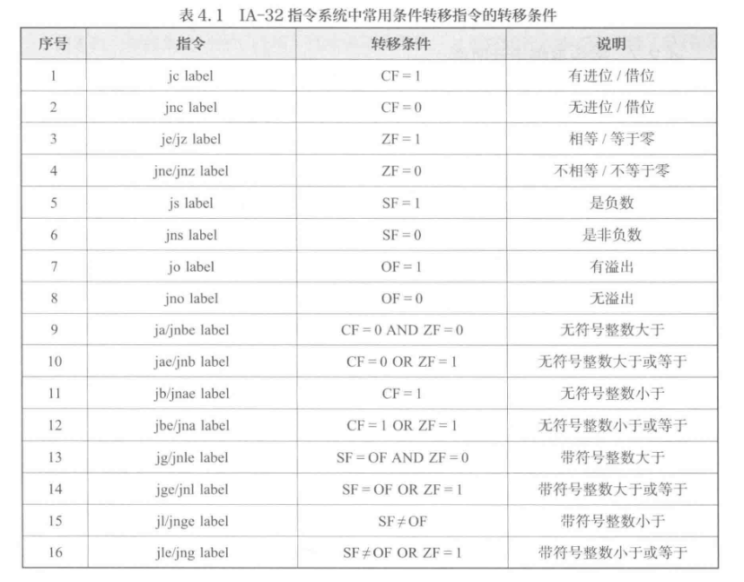
指令系统设计风格
一、按照操作数位置指定风格
根据操作数在指令中的位置不同，指令系统可以分为以下四种设计风格
-
累加器(AC)型指令系统：操作数隐含地包含在累加器(AC)中，运算结果也存回累加器
-
栈(Stack)型指令系统：使用后入先出地存储结构，操作数在栈顶，运算时自动出栈入栈
-
通用寄存器(GPR)型：操作数不在累加器或栈，而在通用寄存器或存储器中
按操作数位置分为：
- RR型：两操作数均为寄存器
- RS型：一为寄存器，一位存储器
- SS型：两操作数均为存储器或立即数
-
Load/Store 型指令系统：运算只能在寄存器之间进行，存储器只能通过Load/Store访问
二、按指令格式的复杂度分类
指令系统按照复杂度还可以如下分类：
1) CISC(复杂指令集计算机)
通过丰富的复杂指令实现“高层语言->硬件”功能映射，减少程序长度和开发难度
优点：
- 功能强大，支持高级语言特性
- 程序体积小，汇编简化
缺点:
- 硬件结构复杂，指令周期长
- 编译器优化困难，20% 指令使用率占 80% 时间，效率低
代表：x86系列，VAX等
2) RISC(精简指令集计算机)
通过简化指令集提高执行效率、优化流水线
特征：
- 指令数少：以简单、高频指令为主
- 固定格式：操作码和操作数长度固定，解码快
- Load/Store结构：运算仅在寄存器之间进行
- 流水线执行：简化控制逻辑，提升时钟频率
- 大量寄存器：减少访存，提高效率
- 硬连线控制：逻辑简单，微程序控制可省略
- 编译优化好：便于编译器调度和重排
异常和中断处理
一、概念
异常 和 中断 并不是指令，而是指计算机系统结构必须考虑的重要内涵。当程序正常执行过程中，CPU 可能遇到无法继续执行的事件或外部请求，这类事件主要分为两类：
- 异常：由CPU内部产生的意外事件
- 中断：由CPU外部设别产生的请求
在 IA-32 架构中，异常和中断的说法如下：
- 异常：执行某条指令是 CPU 内部检测到的同步事件
- 中断：I/O设备等外部异步触发事件
二、异常
异常是指令执行过程中由 CPU内部 检测到的事件，如：
- 除零溢出
- 断点设置
- 单步跟踪
- 访问越界
- 非法操作码
- 栈溢出、缺页、保护错误等
同时，根据异常产生方式和返回方式不同，内部异常分为三类
| 内部异常 | 含义 | 操作 | 例子 | 特点 |
|---|---|---|---|---|
| 故障 | 在指令执行前被检测到的异常 | 执行中止，系统将异常信息送出，并返回到引发故障的指令继续执行 | 非法操作码、除零、缺页异常、保护错误 | 可以通过异常处理恢复程序执行 |
| 自陷 | 类似于“断点”，是一种预先安排的异常，用于程序调试或系统调用 | 程序执行到某条“陷阱指令”时，CPU 自动触发相应的处理程序；处理结束后返回到陷阱指令的下一条指令继续执行 | 单步跟踪，条件断点，系统调用陷阱 | |
| 终止 | 表示发生了严重错误 | 程序无法恢复，无法确定异常对应哪条指令 | 硬件故障、访问非法内存、DRAM 出错、SRAM 校验失败 | 程序无法继续，只能终止或重启系统 |
三、中断
中断是指令执行期间，由 CPU 外部设备 触发的事件，要求 CPU 暂停当前程序，转而处理外部事件。
例如：I/O完成信号、定时器中断、键盘输入、外设数据传输完成
工作流程如下
- 程序运行时检测到外部事件，CPU 发出中断请求（INTR 或 NMI）。
- CPU 保存当前程序状态（如下一条指令地址等）。
- 跳转到中断服务程序（ISR）执行。
- 处理结束后返回原程序继续执行。
四、中断处理机制
中断的触发与响应
- I/O设备触发->CPU接收中断请求
- CPU检测中断许可位（“中断允许”/“关中断”）
- 若允许中断，则进入中断处理流程
中断处理流程
中断处理流程可分为 硬件完成部分 和 软件完成部分
- 硬件部分：检测和响应中断；保存当前执行环境；跳转到中断入口
- 软件部分：执行中断服务程序(ISR)；保护/恢复必要状态；根据需要重新启用中断；返回原程序继续执行
注意：若中断发生时未保存好程序现场，将无法正确返回原程序
五、设计要求与注意事项
CPU 指令集结构必须对以下方面作出明确规定：
- 异常/中断的分类与定义
- 自陷指令与陷阱处理方式
- 中断允许位的控制机制
- 异常/中断源的识别与记录
- 异常入口、断点信息、上下文的保存
- 异常/中断处理过程中的软硬件协作
小总结
| 分类 | 来源 | 特点 | 返回位置 | 常见场景 |
|---|---|---|---|---|
| 故障（Fault） | CPU 内部 | 执行前检测 | 出错指令 | 非法操作码、除零、缺页 |
| 自陷（Trap） | 程序预设 | 执行时触发 | 下一条指令 | 单步调试、系统调用 |
| 终止（Abort） | 严重错误 | 无法恢复 | 无法返回 | 硬件损坏、内存校验失败 |
| 中断（Interrupt） | 外部设备 | 异步触发 | 中断返回点 | I/O 完成、定时器、键盘输入 |
4.3 RISC-V 架构及程序的机器级表示
本节内容的话，我的建议是打打pwn，书上写的太烂了，以至于不知道笔记怎么整理了